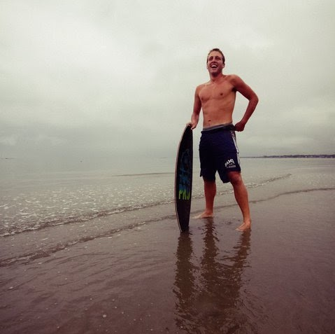
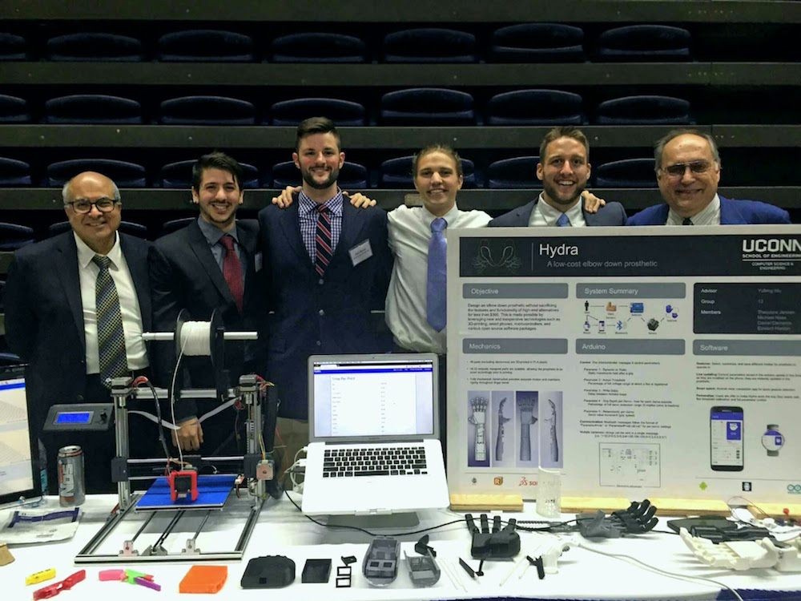
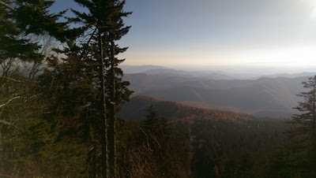
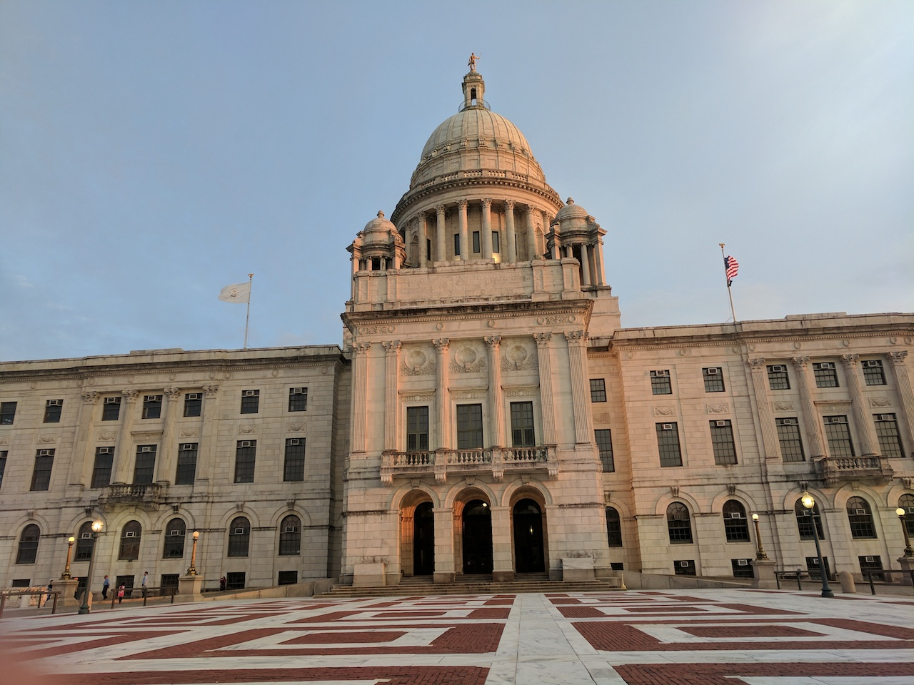

That rock is rotating around its axis at ~1000 miles per hour to give us 24 hours in a single day!
How have I been spending my time?

I grew up in a shoreline town in New England
After playing tons of sports, meeting some best friends, and graduating, I shipped out to Massachusetts Maritime Academy. The regimented lifestyle was different and I learned invaluable life lessons, sailed around South America, and played collegiate lacrosse.

I transferred to The University of Connecticut.
Through persistence and hard work, qualified for the Computer Science & Engineering program.
Countless trials and tribulations later, my closest friends and I ended up winning Senior design with an unfunded, muscle & android controlled, 3D printed prosthetic arm, named Hydra. I successfully graduated with a Bachelors of Science in Computer Science and Engineering.
Then I moved down to North Carolina for a full time job writing internal tooling web software. I met some incredible people, explored the beautiful blue mountains, and the ever familiar East coast shoreline.
After finishing up there, I migrated up to New England to continue pursuing my passion for Software Engineering. Continually switching between different Node.JS, Python, and PHP projects.
New oportunities induced and I found myself able to turn my IoT hobbies and interests into a primary focus! Any given day I could be writing Swift, Objective C, or even some C++.